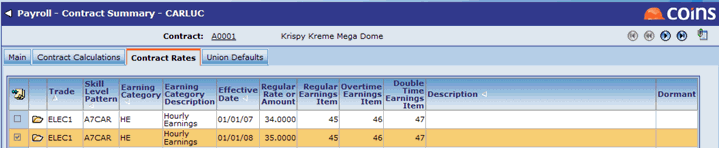
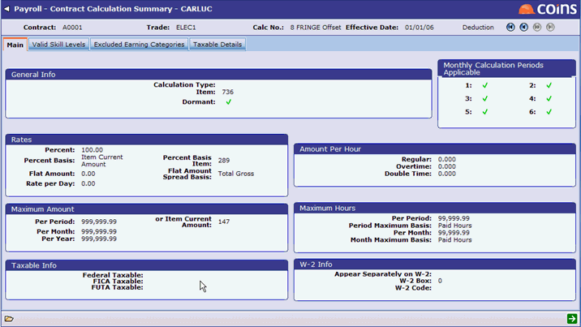

<?xml version="1.0" encoding="utf-8"?>
<html lang="en" xmlns:MadCap="http://www.madcapsoftware.com/Schemas/MadCap.xsd">
    <head><title>Minimum Fringe Calculations</title>
    </head>
    <body>
        <MadCap:concept term="Topics" />
        <h1 class="print">Minimum Fringe Calculations</h1>
        <p>&#160;</p>
        <table class="SpecificTopic">
            <tbody>
                <tr>
                    <td class="Edge">&#160;</td>
                    <td><span class="Stars">***</span>NOTE: THIS IS A US SPECIFIC TOPIC.<span class="Stars">***</span></td>
                    <td class="Edge">&#160;</td>
                </tr>
            </tbody>
        </table>
        <p>Any employer participating in Construction <MadCap:variable name="Variables.jc contracts" style="text-transform: capitalize;" /> that contain Federal or State funding are subject to prevailing wage law. Prevailing Wage is the minimum wage plus fringe benefits that must be paid to each classification of <MadCap:variable name="Variables.operatives" />, such as <MadCap:variable name="Variables.labour" />ers, carpenters, etc. Prevailing Wage Rates and Fringes are published by the Federal or State and included in the <MadCap:variable name="Variables.Jc Contract caps" /> Specifications.</p>
        <p>Generally, the Rate represents the minimum hourly rate each classification a <MadCap:variable name="Variables.operative" /> can receive, while Fringes represent the minimum fringe benefit package that must be paid on behalf of an employee participating in a public <MadCap:variable name="Variables.jc contract" />. Fringes must be paid in cash for each hour worked or paid and offset with qualifying employer provided benefits. Overtime requirements for rates and fringes are included in the Prevailing Wage Rate Schedule.</p>
        <p><MadCap:variable name="General.ProductName" /> has the ability to reduce <MadCap:variable name="Variables.jc contract" />-related fringe benefits paid in cash by qualified employer-provided fringes such as Health Insurance or Pension Contribution.</p>
        <p>Use the steps below to configure <MadCap:variable name="General.ProductName" /> to handle Minimum Fringe Evaluations on prevailing wage rate <MadCap:variable name="Variables.jc contracts" />.</p>
        <div class="process">
            <h2 class="print">To configure minimum fringe calculations:</h2>
            <p>To set up rates and calculations for a classification of worker on a Prevailing Wage Rate <MadCap:variable name="Variables.Jc Contract caps" />, do the following:</p>
            <ol>
                <li>In <span class="function" title="Function:%WPR228SJOB"><MadCap:variable name="Variables.Jc Contract caps" /> Details</span>, <MadCap:variable name="Variables.tick" /> the <span class="field">Certified </span>box to enable this <MadCap:variable name="Variables.jc contract" /> to produce Certified Payroll Reports generally required on Prevailing Wage Rate <MadCap:variable name="Variables.jc contracts" style="text-transform: capitalize;" />.</li>
                <li>In <span class="function" title="Function:%WPR229BPJR"><MadCap:variable name="Variables.Jc Contract caps" /> Rates</span>, set up rates as defined in the Prevailing Wage Rate Schedule for each trade or classification of worker to be employed on the <MadCap:variable name="Variables.jc contract" />. Be sure to add Valid Skill Level(s) for each rate.</li>
            </ol>
            <blockquote dir="ltr" style="margin-right: 0px;">
                <p>For example, <MadCap:variable name="Variables.labour" style="text-transform: capitalize;" />ers may have two valid rates: (1) Basic <MadCap:variable name="Variables.labour" style="text-transform: capitalize;" />er and (2) Mason Tender. The rate used on a timecard will be determined by the Trade/Skill Level combination entered during Timesheet Entry. Both classifications of <MadCap:variable name="Variables.labour" style="text-transform: capitalize;" />er may receive the same Fringe Benefit Package.</p>
                <p>When adding <MadCap:variable name="Variables.Jc Contract caps" /> Rates, patterns may be used in Skill Levels. For example, pattern "J*" may represent all Journeyworkers. The rate used on a specific timecard will be determined not only by the Trade and Skill Level, but by comparing the Timecard Date to the&#160;Effective Date of the <MadCap:variable name="Variables.Jc Contract caps" /> Rate. Rate changes can be added in advance. Pay Items used for <MadCap:variable name="Variables.Jc Contract caps" /> Rates will generally be the Pay Items reserved for Regular, Overtime, and Double Time earnings, although other pay items can be created and used if necessary. If adding new Pay Items, be sure they are reflected in <span class="function" title="Function:%WPR240BPSQ">Item Sequences</span>.</p>
                <p>
                    
                </p>
            </blockquote>
            <ol start="3">
                <li>In <span class="function" title="Function:%WPR210BQRI">Pay Items</span>, add a Subtotal Pay Item that represents Fringe Benefits Paid in Cash. This pay item will hold the full value of Fringe Benefits as defined in the Prevailing Wage Schedule, and it should be taxable. In the sample screenshot shown in Step 8, this would be Pay Item 147.</li>
                <li>In <span class="function" title="Function:%WPR210BQRI">Pay Items</span>, add a Subtotal Pay Item. This new pay item will hold the period value of qualifying Employer Provided Fringe Benefits that can be deducted from the fringe benefit package. Add the new pay item to the <span class="field">Effects </span>field for any pay item deemed to be a qualified employer provided fringe. In the sample screenshot shown in Step 8, this would be Pay Item 289.</li>
            </ol>
            <blockquote dir="ltr" style="margin-right: 0px;">
                <p>For example, the Prevailing Wage Rate Schedule for <MadCap:variable name="Variables.Jc Contract caps" /> A1001 for Electricians requires that the Base Fringe Benefits is $6.00 per hour worked. Employers are allowed to offset the required fringe with company provided benefits such as employer-funded Health and Life Insurance. If Qualifying Employer Provided Fringe Benefits is $4.25 per hour worked, the result will be $1.75 per hour worked included in pay.</p>
            </blockquote>
            <ol start="5">
                <li>In <span class="function" title="Function:%WPR210BQRI">Pay Items</span>, add a Subtotal Pay Item that will hold the value to be deducted from Fringe Benefits Paid in Cash. In the sample screenshot shown in Step 8, this would be Pay Item 736.</li>
                <li>In <span class="function" title="Function:%WPR240BPSQ">Item Sequences</span>, add the pay items created in Steps 3 - 5 above. These new pay items must precede any pay items used to hold tax calculations in your sequence.</li>
                <li>In <span class="function" title="Function:%WPR228BPJO"><MadCap:variable name="Variables.Jc Contract caps" /> Calculations</span>, set up a <span class="userinput">Fringe Included in Pay </span>to represent the Fringe Benefit Package defined on the Prevailing Wage Rate Schedule. Be sure to pay attention to overtime provisions on the Rate Schedule for fringes. Some fringes may be paid per hour worked while others are per hour paid. This benefit should be taxable. In the sample screenshot shown in Step 8, this would be Pay Item 147.</li>
                <li>In <span class="function" title="Function:%WPR228BPJO"><MadCap:variable name="Variables.Jc Contract caps" /> Calculations</span>, set up a deduction to represent the Fringe Benefits paid to approved plans and funds. Be sure to make the deduction non-taxable so its effect is to reduce the value included in income from the calculation created in Step 4 above.</li>
            </ol>
            <blockquote dir="ltr" style="margin-right: 0px;">
                <p>Set the new calculation as follows: the Deduction <span class="field">Percent </span>should be <span class="userinput">100%</span>, the <span class="field">Percent Basis </span>should be <span class="userinput">Item Current Amount</span>, the <span class="field">Percent Basis Item </span>should be the item created in Step 3, and the <span class="field">Maximum Amount </span>should be set to <span class="userinput">Item Current Amount </span>of the Fringe in Pay created in Step 4. In the sample screenshot shown below, this <MadCap:variable name="Variables.jc contract" /> calculation's value would be stored in Pay Item 736 as a reduction of Net Pay. It would be computed based on the Qualified Employer Fringe Benefits held in Pay Item 289, but will not exceed 100% of the amount computed as Fringe Benefits Paid in Cash, held in Pay Item 147.</p>
                <p>
                    
                </p>
                <p>Using this method, the deduction will be equal to the sum of the Employer Provided Fringe Benefits, but never exceed the Fringe Package set forth in the Prevailing Wage Rate Schedule.</p>
            </blockquote>
        </div>
        <div class="configuration">
            <h2 class="print">Minimum Fringe Calculations</h2>
        </div>
    </body>
</html>